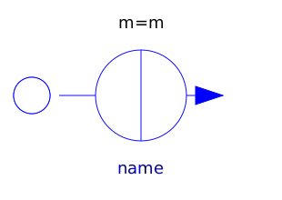
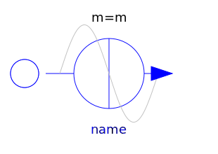

This package contains time-dependent and controlled multiphase voltage and current sources:
| Name | Description |
|---|---|
| Multiphase signal voltage source | |
| Multiphase constant voltage source | |
| Multiphase sine voltage source | |
| Multiphase cosine voltage source | |
| Multiphase sine current source | |
|  ConstantCurrent | Multiphase constant current source |
|  SineCurrent | Multiphase sine current source |
| CosineCurrent | Multiphase cosine current source |